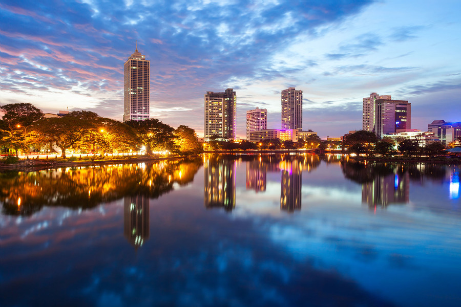
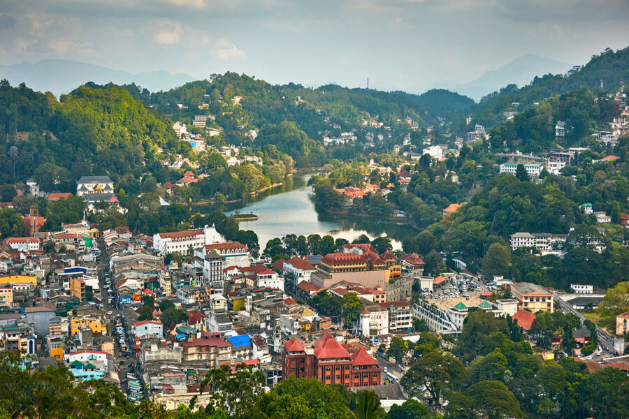
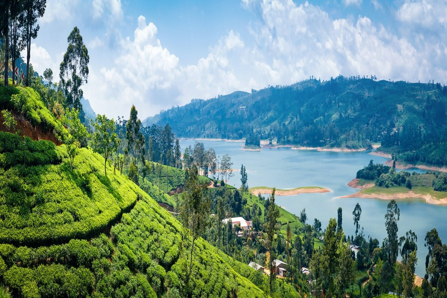

Colombo is the capital city of Sri Lanka, and the country’s largest city in terms of population. It is a beautiful city surrounded by white sand beaches and an impressive harbourfront. Colombo is characterised by a series of canals, with the picturesque 160-acre Beira Lake at its centre. It’s the perfect destination for students to experience plenty in the way of culture, history and recreation as they work towards their degree..
Colombo

Kandy is a large city in central Sri Lanka. It's set on a plateau surrounded by mountains, which are home to tea plantations and biodiverse rainforest. The city's heart is scenic Kandy Lake (Bogambara Lake), which is popular for strolling. Kandy is famed for sacred Buddhist sites, including the Temple of the Tooth (Sri Dalada Maligawa) shrine, celebrated with the grand Esala Perahera annual procession. .
Kandy

Nuwara Eliya is a city in the tea country hills of central Sri Lanka. The naturally landscaped Hakgala Botanical Gardens displays roses and tree ferns, and shelters monkeys and blue magpies. Nearby Seetha Amman Temple, a colorful Hindu shrine, is decorated with religious figures. Densely forested Galway's Land National Park is a sanctuary for endemic and migratory bird species, including bulbuls and flycatchers.
Nuwara Eliya